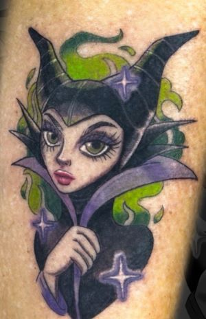
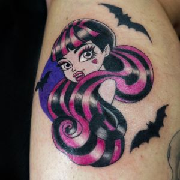

//TATUAGGI ANIME A COLORE, BIANCO E NERO, DOTWORK//
Fin da piccolo sono stato sempre appassionato di anime e videogiochi. Nel 2014 ho comprato la mia prima macchinetta e nel 2016 ho conseguito l'abilitazione per permettermi di fare della mia passione il mio lavoro

